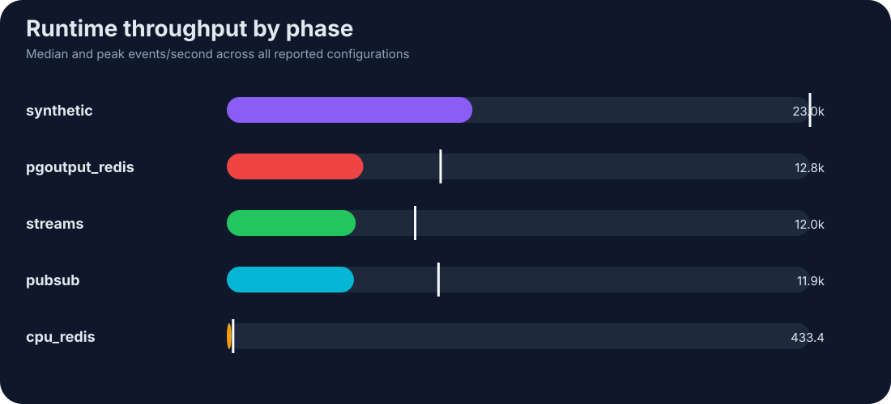
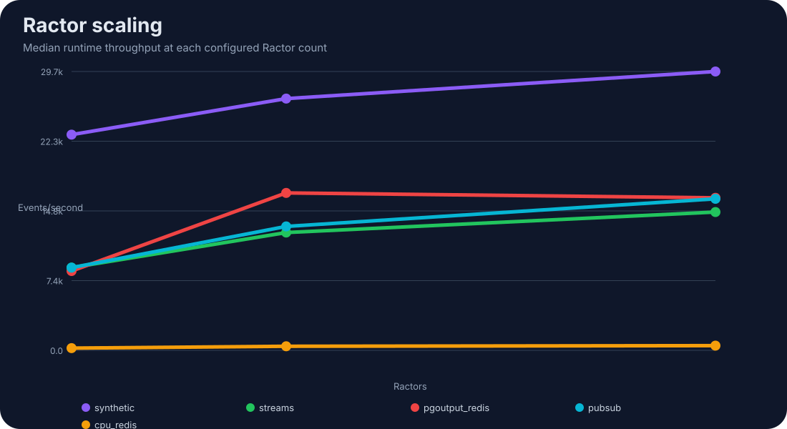
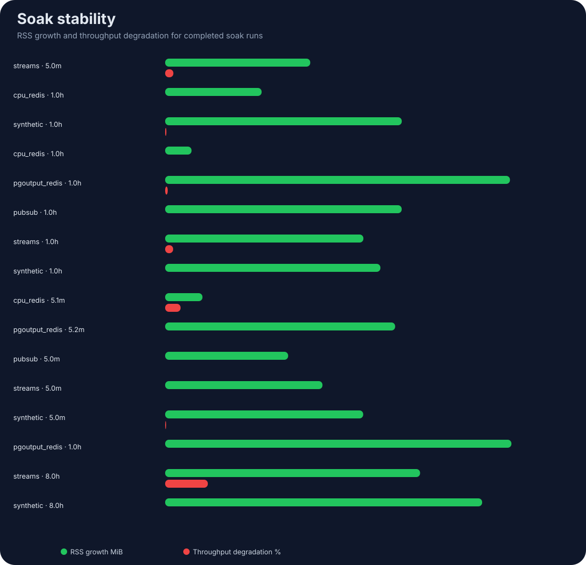
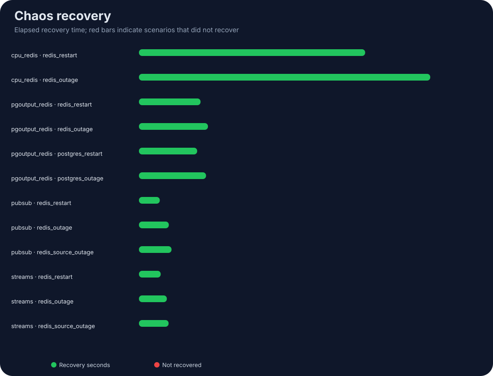

PUBLIC PERFORMANCE REPORT
CDC Orchestrator Benchmark Analytics
Interactive analysis generated directly from benchmark, soak, and chaos CSV files.
Generated
2026-06-26T22:48:16Z
2026-06-26T22:48:16Z





OBSERVED FINDINGS
What the data currently suggests
- Efficiency leader: synthetic · 1 Ractors · 5 Redis/Ractor · 50 fibers at 34.0k events/s.
- Streams peak: streams · 3 Ractors · 5 Redis/Ractor · 50 fibers at 17.6k events/s.
- Interpretation: Runtime throughput excludes source acquisition; use end-to-end figures when discussing complete pipelines.
RAW EVIDENCE
Benchmark matrix
| Phase | Execution Mode | Ractors | Redis Connections | Fiber Concurrency | Preserve Order | Events Per Second | Latency P95 Ms | Cpu Percent | Rss Delta Bytes | Failures |
|---|---|---|---|---|---|---|---|---|---|---|
| synthetic | batch | 3.0 | 5.0 | 50.0 | true | 29.9k | 320.57 | 174.48 | 16.38 MiB | 0.0 |
| streams | batch | 1.0 | 1.0 | 10.0 | true | 4.5k | 2573.46 | 65.89 | 13.55 MiB | 0.0 |
| pgoutput_redis | batch | 1.0 | 1.0 | 10.0 | true | 5.5k | 13716.46 | 82.27 | 24.47 MiB | 0.0 |
| synthetic | batch | 1.0 | 1.0 | 10.0 | true | 23.0k | 411.97 | 93.64 | 19.29 MiB | 0.0 |
| synthetic | batch | 1.0 | 1.0 | 10.0 | false | 29.3k | 322.78 | 98.25 | 2.02 MiB | 0.0 |
| synthetic | batch | 1.0 | 1.0 | 50.0 | true | 30.9k | 304.45 | 96.89 | 2.05 MiB | 0.0 |
| synthetic | batch | 1.0 | 1.0 | 50.0 | false | 31.6k | 296.88 | 99.98 | 1.65 MiB | 0.0 |
| synthetic | batch | 1.0 | 1.0 | 100.0 | true | 30.6k | 304.46 | 99.88 | -1.28 MiB | 0.0 |
| synthetic | batch | 1.0 | 1.0 | 100.0 | false | 31.3k | 300.98 | 99.90 | 0.91 MiB | 0.0 |
| synthetic | batch | 1.0 | 5.0 | 10.0 | true | 29.5k | 317.80 | 99.93 | 10.07 MiB | 0.0 |
| synthetic | batch | 1.0 | 5.0 | 10.0 | false | 33.8k | 270.84 | 99.76 | 0.74 MiB | 0.0 |
| synthetic | batch | 1.0 | 5.0 | 50.0 | true | 33.2k | 278.98 | 99.50 | 0.24 MiB | 0.0 |
| synthetic | batch | 1.0 | 5.0 | 50.0 | false | 34.0k | 277.82 | 99.82 | 1.33 MiB | 0.0 |
| synthetic | batch | 1.0 | 5.0 | 100.0 | true | 29.9k | 314.80 | 99.84 | 0.63 MiB | 0.0 |
| synthetic | batch | 1.0 | 5.0 | 100.0 | false | 29.7k | 322.63 | 99.42 | -1.56 MiB | 0.0 |
| synthetic | batch | 1.0 | 10.0 | 10.0 | true | 29.8k | 316.88 | 99.98 | 0.00 MiB | 0.0 |
| synthetic | batch | 1.0 | 10.0 | 10.0 | false | 29.7k | 318.02 | 99.96 | 0.00 MiB | 0.0 |
| synthetic | batch | 1.0 | 10.0 | 50.0 | true | 30.5k | 304.34 | 99.53 | 0.00 MiB | 0.0 |
| synthetic | batch | 1.0 | 10.0 | 50.0 | false | 28.1k | 334.87 | 99.04 | 0.12 MiB | 0.0 |
| synthetic | batch | 1.0 | 10.0 | 100.0 | true | 29.2k | 324.97 | 99.81 | 0.00 MiB | 0.0 |
| synthetic | batch | 1.0 | 10.0 | 100.0 | false | 29.0k | 324.47 | 98.75 | 0.00 MiB | 0.0 |
| synthetic | batch | 3.0 | 1.0 | 10.0 | true | 35.8k | 258.63 | 179.51 | 4.77 MiB | 0.0 |
| synthetic | batch | 3.0 | 1.0 | 10.0 | false | 36.9k | 255.75 | 173.38 | 0.30 MiB | 0.0 |
| synthetic | batch | 3.0 | 1.0 | 50.0 | true | 40.6k | 233.07 | 199.96 | 0.71 MiB | 0.0 |
| synthetic | batch | 3.0 | 1.0 | 50.0 | false | 41.2k | 234.29 | 200.20 | 0.21 MiB | 0.0 |
| synthetic | batch | 3.0 | 1.0 | 100.0 | true | 38.0k | 250.29 | 189.47 | 0.38 MiB | 0.0 |
| synthetic | batch | 3.0 | 1.0 | 100.0 | false | 40.8k | 228.46 | 199.47 | 1.07 MiB | 0.0 |
| synthetic | batch | 3.0 | 5.0 | 10.0 | true | 26.8k | 339.15 | 165.78 | 0.08 MiB | 0.0 |
| synthetic | batch | 3.0 | 5.0 | 10.0 | false | 29.9k | 326.42 | 179.43 | -0.00 MiB | 0.0 |
| synthetic | batch | 3.0 | 5.0 | 50.0 | true | 32.8k | 292.91 | 181.71 | 0.00 MiB | 0.0 |
| synthetic | batch | 3.0 | 5.0 | 50.0 | false | 47.1k | 204.36 | 214.25 | 0.00 MiB | 0.0 |
| synthetic | batch | 3.0 | 5.0 | 100.0 | true | 35.8k | 274.33 | 167.71 | -0.00 MiB | 0.0 |
| synthetic | batch | 3.0 | 5.0 | 100.0 | false | 47.6k | 199.87 | 212.80 | -0.62 MiB | 0.0 |
| synthetic | batch | 3.0 | 10.0 | 10.0 | true | 47.7k | 197.49 | 206.78 | 0.00 MiB | 0.0 |
| synthetic | batch | 3.0 | 10.0 | 10.0 | false | 52.0k | 176.46 | 227.17 | -1.14 MiB | 0.0 |
| synthetic | batch | 3.0 | 10.0 | 50.0 | true | 52.7k | 180.76 | 224.53 | -0.18 MiB | 0.0 |
| synthetic | batch | 3.0 | 10.0 | 50.0 | false | 48.5k | 187.28 | 198.88 | 0.00 MiB | 0.0 |
| synthetic | batch | 3.0 | 10.0 | 100.0 | true | 39.0k | 252.20 | 159.33 | -0.31 MiB | 0.0 |
| synthetic | batch | 3.0 | 10.0 | 100.0 | false | 35.8k | 260.96 | 172.53 | 0.00 MiB | 0.0 |
| synthetic | batch | 7.0 | 1.0 | 10.0 | true | 33.4k | 289.04 | 165.42 | 5.29 MiB | 0.0 |
| synthetic | batch | 7.0 | 1.0 | 10.0 | false | 39.4k | 242.91 | 195.06 | -0.17 MiB | 0.0 |
| synthetic | batch | 7.0 | 1.0 | 50.0 | true | 30.5k | 323.01 | 144.72 | 0.39 MiB | 0.0 |
| synthetic | batch | 7.0 | 1.0 | 50.0 | false | 36.5k | 272.62 | 198.16 | 0.04 MiB | 0.0 |
| synthetic | batch | 7.0 | 1.0 | 100.0 | true | 35.4k | 264.11 | 216.86 | 0.00 MiB | 0.0 |
| synthetic | batch | 7.0 | 1.0 | 100.0 | false | 36.7k | 264.46 | 210.64 | -0.06 MiB | 0.0 |
| synthetic | batch | 7.0 | 5.0 | 10.0 | true | 29.7k | 325.36 | 190.83 | 0.12 MiB | 0.0 |
| synthetic | batch | 7.0 | 5.0 | 10.0 | false | 43.9k | 222.40 | 231.51 | -0.00 MiB | 0.0 |
| synthetic | batch | 7.0 | 5.0 | 50.0 | true | 40.6k | 235.22 | 231.24 | 0.19 MiB | 0.0 |
| synthetic | batch | 7.0 | 5.0 | 50.0 | false | 42.1k | 227.89 | 242.17 | 0.00 MiB | 0.0 |
| synthetic | batch | 7.0 | 5.0 | 100.0 | true | 41.8k | 230.73 | 231.21 | 0.00 MiB | 0.0 |
| synthetic | batch | 7.0 | 5.0 | 100.0 | false | 40.9k | 237.74 | 218.34 | 0.00 MiB | 0.0 |
| synthetic | batch | 7.0 | 10.0 | 10.0 | true | 41.0k | 234.83 | 229.59 | 0.12 MiB | 0.0 |
| synthetic | batch | 7.0 | 10.0 | 10.0 | false | 41.8k | 231.68 | 227.40 | 0.00 MiB | 0.0 |
| synthetic | batch | 7.0 | 10.0 | 50.0 | true | 43.5k | 225.35 | 256.52 | 0.00 MiB | 0.0 |
| synthetic | batch | 7.0 | 10.0 | 50.0 | false | 54.5k | 176.62 | 264.48 | 0.07 MiB | 0.0 |
| synthetic | batch | 7.0 | 10.0 | 100.0 | true | 52.2k | 179.79 | 251.54 | 0.00 MiB | 0.0 |
| synthetic | batch | 7.0 | 10.0 | 100.0 | false | 44.8k | 214.25 | 216.38 | 0.70 MiB | 0.0 |
| synthetic | per_event | 1.0 | 1.0 | 10.0 | true | 1.7k | 5457.67 | 90.83 | -1.33 MiB | 0.0 |
| synthetic | per_event | 1.0 | 1.0 | 10.0 | false | 1.8k | 5445.01 | 88.10 | 0.35 MiB | 0.0 |
| synthetic | per_event | 1.0 | 1.0 | 50.0 | true | 1.3k | 7495.71 | 82.32 | -0.55 MiB | 0.0 |
| synthetic | per_event | 1.0 | 1.0 | 50.0 | false | 1.1k | 8985.65 | 75.23 | 0.46 MiB | 0.0 |
| synthetic | per_event | 1.0 | 1.0 | 100.0 | true | 2.1k | 4444.74 | 93.48 | 0.52 MiB | 0.0 |
| synthetic | per_event | 1.0 | 1.0 | 100.0 | false | 2.1k | 4594.90 | 91.87 | 0.27 MiB | 0.0 |
| synthetic | per_event | 1.0 | 5.0 | 10.0 | true | 1.8k | 5410.03 | 91.36 | 0.23 MiB | 0.0 |
| synthetic | per_event | 1.0 | 5.0 | 10.0 | false | 1.7k | 5490.52 | 89.70 | 0.48 MiB | 0.0 |
| synthetic | per_event | 1.0 | 5.0 | 50.0 | true | 1.8k | 5388.58 | 92.80 | 0.42 MiB | 0.0 |
| synthetic | per_event | 1.0 | 5.0 | 50.0 | false | 2.1k | 4552.90 | 93.26 | -1.84 MiB | 0.0 |
| synthetic | per_event | 1.0 | 5.0 | 100.0 | true | 1.6k | 5856.46 | 85.70 | 0.43 MiB | 0.0 |
| synthetic | per_event | 1.0 | 5.0 | 100.0 | false | 1.6k | 5885.19 | 85.84 | 0.41 MiB | 0.0 |
| synthetic | per_event | 1.0 | 10.0 | 10.0 | true | 1.8k | 5389.89 | 92.10 | 0.41 MiB | 0.0 |
| synthetic | per_event | 1.0 | 10.0 | 10.0 | false | 1.9k | 4847.98 | 93.36 | -1.14 MiB | 0.0 |
| synthetic | per_event | 1.0 | 10.0 | 50.0 | true | 1.8k | 5452.63 | 88.86 | 0.43 MiB | 0.0 |
| synthetic | per_event | 1.0 | 10.0 | 50.0 | false | 1.5k | 6174.57 | 84.59 | 0.43 MiB | 0.0 |
| synthetic | per_event | 1.0 | 10.0 | 100.0 | true | 2.1k | 4445.98 | 95.80 | 0.38 MiB | 0.0 |
| synthetic | per_event | 1.0 | 10.0 | 100.0 | false | 1.6k | 6049.72 | 83.96 | -1.23 MiB | 0.0 |
| synthetic | per_event | 3.0 | 1.0 | 10.0 | true | 1.2k | 7802.98 | 93.75 | 0.34 MiB | 0.0 |
| synthetic | per_event | 3.0 | 1.0 | 10.0 | false | 1.4k | 6924.52 | 96.53 | 0.13 MiB | 0.0 |
| synthetic | per_event | 3.0 | 1.0 | 50.0 | true | 1.5k | 6316.39 | 98.22 | 0.12 MiB | 0.0 |
| synthetic | per_event | 3.0 | 1.0 | 50.0 | false | 1.5k | 6393.51 | 98.07 | -1.38 MiB | 0.0 |
| synthetic | per_event | 3.0 | 1.0 | 100.0 | true | 1.3k | 7583.67 | 93.90 | -0.50 MiB | 0.0 |
| synthetic | per_event | 3.0 | 1.0 | 100.0 | false | 1.6k | 6004.85 | 99.33 | 0.11 MiB | 0.0 |
| synthetic | per_event | 3.0 | 5.0 | 10.0 | true | 1.7k | 5632.18 | 99.52 | 0.09 MiB | 0.0 |
| synthetic | per_event | 3.0 | 5.0 | 10.0 | false | 1.7k | 5295.01 | 101.90 | -0.51 MiB | 0.0 |
| synthetic | per_event | 3.0 | 5.0 | 50.0 | true | 1.7k | 5531.19 | 101.33 | 0.08 MiB | 0.0 |
| synthetic | per_event | 3.0 | 5.0 | 50.0 | false | 1.6k | 6046.37 | 98.49 | 0.09 MiB | 0.0 |
| synthetic | per_event | 3.0 | 5.0 | 100.0 | true | 1.6k | 5842.98 | 99.79 | 0.00 MiB | 0.0 |
| synthetic | per_event | 3.0 | 5.0 | 100.0 | false | 1.6k | 6129.72 | 97.75 | 0.08 MiB | 0.0 |
| synthetic | per_event | 3.0 | 10.0 | 10.0 | true | 1.7k | 5581.24 | 100.74 | 0.09 MiB | 0.0 |
| synthetic | per_event | 3.0 | 10.0 | 10.0 | false | 1.8k | 5351.19 | 103.14 | 0.06 MiB | 0.0 |
| synthetic | per_event | 3.0 | 10.0 | 50.0 | true | 1.6k | 5934.04 | 97.62 | 0.09 MiB | 0.0 |
| synthetic | per_event | 3.0 | 10.0 | 50.0 | false | 1.6k | 5780.82 | 99.42 | 0.09 MiB | 0.0 |
| synthetic | per_event | 3.0 | 10.0 | 100.0 | true | 1.6k | 5845.53 | 99.75 | 0.06 MiB | 0.0 |
| synthetic | per_event | 3.0 | 10.0 | 100.0 | false | 1.7k | 5445.66 | 102.30 | 0.07 MiB | 0.0 |
| synthetic | per_event | 7.0 | 1.0 | 10.0 | true | 949.4 | 9970.73 | 97.60 | 0.08 MiB | 0.0 |
| synthetic | per_event | 7.0 | 1.0 | 10.0 | false | 944.4 | 9858.18 | 100.05 | 0.02 MiB | 0.0 |
| synthetic | per_event | 7.0 | 1.0 | 50.0 | true | 879.8 | 10303.70 | 92.31 | 0.02 MiB | 0.0 |
| synthetic | per_event | 7.0 | 1.0 | 50.0 | false | 805.6 | 11806.63 | 94.63 | 0.04 MiB | 0.0 |
| synthetic | per_event | 7.0 | 1.0 | 100.0 | true | 781.1 | 12200.78 | 89.69 | 0.04 MiB | 0.0 |
| synthetic | per_event | 7.0 | 1.0 | 100.0 | false | 856.2 | 10988.83 | 95.47 | 0.04 MiB | 0.0 |
| synthetic | per_event | 7.0 | 5.0 | 10.0 | true | 848.1 | 11110.80 | 96.20 | 0.04 MiB | 0.0 |
| synthetic | per_event | 7.0 | 5.0 | 10.0 | false | 758.3 | 12512.47 | 91.24 | 0.04 MiB | 0.0 |
| synthetic | per_event | 7.0 | 5.0 | 50.0 | true | 913.7 | 10345.79 | 98.95 | 0.04 MiB | 0.0 |
| synthetic | per_event | 7.0 | 5.0 | 50.0 | false | 701.6 | 13720.10 | 88.10 | 0.04 MiB | 0.0 |
| synthetic | per_event | 7.0 | 5.0 | 100.0 | true | 717.1 | 13281.38 | 89.69 | 0.01 MiB | 0.0 |
| synthetic | per_event | 7.0 | 5.0 | 100.0 | false | 857.7 | 10992.86 | 95.29 | 0.03 MiB | 0.0 |
| synthetic | per_event | 7.0 | 10.0 | 10.0 | true | 792.9 | 11718.52 | 92.31 | 0.02 MiB | 0.0 |
| synthetic | per_event | 7.0 | 10.0 | 10.0 | false | 926.8 | 10234.18 | 98.21 | 0.04 MiB | 0.0 |
| synthetic | per_event | 7.0 | 10.0 | 50.0 | true | 865.0 | 10824.65 | 95.04 | 0.04 MiB | 0.0 |
| synthetic | per_event | 7.0 | 10.0 | 50.0 | false | 802.8 | 11859.48 | 95.71 | 0.04 MiB | 0.0 |
| synthetic | per_event | 7.0 | 10.0 | 100.0 | true | 823.4 | 11507.32 | 91.35 | 0.04 MiB | 0.0 |
| synthetic | per_event | 7.0 | 10.0 | 100.0 | false | 893.4 | 10500.81 | 96.51 | 0.04 MiB | 0.0 |
| pubsub | batch | 1.0 | 1.0 | 10.0 | true | 6.5k | 2021.08 | 85.04 | 12.27 MiB | 0.0 |
| pubsub | batch | 1.0 | 1.0 | 10.0 | false | 7.1k | 1515.22 | 83.96 | 5.70 MiB | 0.0 |
| pubsub | batch | 1.0 | 1.0 | 50.0 | true | 5.4k | 1967.94 | 71.38 | -0.29 MiB | 0.0 |
| pubsub | batch | 1.0 | 1.0 | 50.0 | false | 7.1k | 1513.18 | 85.75 | 0.66 MiB | 0.0 |
| pubsub | batch | 1.0 | 1.0 | 100.0 | true | 7.1k | 1479.97 | 84.39 | 1.71 MiB | 0.0 |
| pubsub | batch | 1.0 | 1.0 | 100.0 | false | 4.9k | 2122.06 | 68.21 | -1.45 MiB | 0.0 |
| pubsub | batch | 1.0 | 5.0 | 10.0 | true | 7.9k | 1765.93 | 87.10 | 1.55 MiB | 0.0 |
| pubsub | batch | 1.0 | 5.0 | 10.0 | false | 6.2k | 2256.20 | 69.68 | -2.78 MiB | 0.0 |
| pubsub | batch | 1.0 | 5.0 | 50.0 | true | 9.3k | 1914.67 | 98.32 | 0.50 MiB | 0.0 |
| pubsub | batch | 1.0 | 5.0 | 50.0 | false | 9.5k | 1643.33 | 99.87 | 0.01 MiB | 0.0 |
| pubsub | batch | 1.0 | 5.0 | 100.0 | true | 8.8k | 2075.90 | 89.24 | 0.16 MiB | 0.0 |
| pubsub | batch | 1.0 | 5.0 | 100.0 | false | 9.7k | 1567.89 | 99.58 | 1.32 MiB | 0.0 |
| pubsub | batch | 1.0 | 10.0 | 10.0 | true | 7.5k | 1578.10 | 84.25 | 0.02 MiB | 0.0 |
| pubsub | batch | 1.0 | 10.0 | 10.0 | false | 9.5k | 2148.36 | 98.99 | 1.21 MiB | 0.0 |
| pubsub | batch | 1.0 | 10.0 | 50.0 | true | 9.4k | 1339.32 | 99.79 | 0.24 MiB | 0.0 |
| pubsub | batch | 1.0 | 10.0 | 50.0 | false | 8.9k | 1361.74 | 88.97 | 4.03 MiB | 0.0 |
| pubsub | batch | 1.0 | 10.0 | 100.0 | true | 9.8k | 1953.35 | 99.69 | -0.38 MiB | 0.0 |
| pubsub | batch | 1.0 | 10.0 | 100.0 | false | 9.6k | 1375.73 | 99.82 | -1.57 MiB | 0.0 |
| pubsub | batch | 3.0 | 1.0 | 10.0 | true | 10.1k | 1310.31 | 131.91 | 4.85 MiB | 0.0 |
| pubsub | batch | 3.0 | 1.0 | 10.0 | false | 12.8k | 2029.19 | 162.67 | 1.83 MiB | 0.0 |
| pubsub | batch | 3.0 | 1.0 | 50.0 | true | 12.6k | 1382.73 | 163.99 | 1.84 MiB | 0.0 |
| pubsub | batch | 3.0 | 1.0 | 50.0 | false | 11.2k | 1453.86 | 148.79 | 0.11 MiB | 0.0 |
| pubsub | batch | 3.0 | 1.0 | 100.0 | true | 10.2k | 2068.18 | 141.57 | 2.91 MiB | 0.0 |
| pubsub | batch | 3.0 | 1.0 | 100.0 | false | 13.2k | 1460.48 | 165.44 | 1.43 MiB | 0.0 |
| pubsub | batch | 3.0 | 5.0 | 10.0 | true | 18.4k | 1474.52 | 194.11 | 1.93 MiB | 0.0 |
| pubsub | batch | 3.0 | 5.0 | 10.0 | false | 11.9k | 1892.09 | 133.22 | -0.45 MiB | 0.0 |
| pubsub | batch | 3.0 | 5.0 | 50.0 | true | 17.2k | 1307.84 | 184.15 | 0.40 MiB | 0.0 |
| pubsub | batch | 3.0 | 5.0 | 50.0 | false | 17.0k | 1377.08 | 180.15 | 0.08 MiB | 0.0 |
| pubsub | batch | 3.0 | 5.0 | 100.0 | true | 10.1k | 1313.55 | 112.14 | 0.07 MiB | 0.0 |
| pubsub | batch | 3.0 | 5.0 | 100.0 | false | 13.5k | 2182.72 | 159.06 | 0.06 MiB | 0.0 |
| pubsub | batch | 3.0 | 10.0 | 10.0 | true | 17.1k | 1478.96 | 190.10 | 0.07 MiB | 0.0 |
| pubsub | batch | 3.0 | 10.0 | 10.0 | false | 17.2k | 1443.62 | 189.20 | 0.14 MiB | 0.0 |
| pubsub | batch | 3.0 | 10.0 | 50.0 | true | 11.9k | 2008.36 | 129.85 | -0.06 MiB | 0.0 |
| pubsub | batch | 3.0 | 10.0 | 50.0 | false | 18.0k | 1479.80 | 182.54 | -0.14 MiB | 0.0 |
| pubsub | batch | 3.0 | 10.0 | 100.0 | true | 17.0k | 1501.84 | 177.86 | 0.03 MiB | 0.0 |
| pubsub | batch | 3.0 | 10.0 | 100.0 | false | 6.9k | 1954.71 | 89.92 | 0.04 MiB | 0.0 |
| pubsub | batch | 7.0 | 1.0 | 10.0 | true | 11.5k | 2153.01 | 163.90 | 1.47 MiB | 0.0 |
| pubsub | batch | 7.0 | 1.0 | 10.0 | false | 14.2k | 1765.11 | 190.33 | 1.40 MiB | 0.0 |
| pubsub | batch | 7.0 | 1.0 | 50.0 | true | 10.6k | 1918.66 | 142.39 | 0.69 MiB | 0.0 |
| pubsub | batch | 7.0 | 1.0 | 50.0 | false | 14.5k | 1681.30 | 194.08 | 0.05 MiB | 0.0 |
| pubsub | batch | 7.0 | 1.0 | 100.0 | true | 13.4k | 1725.94 | 186.60 | 5.20 MiB | 0.0 |
| pubsub | batch | 7.0 | 1.0 | 100.0 | false | 9.4k | 1804.14 | 128.55 | 0.62 MiB | 0.0 |
| pubsub | batch | 7.0 | 5.0 | 10.0 | true | 17.5k | 1873.24 | 200.20 | 0.85 MiB | 0.0 |
| pubsub | batch | 7.0 | 5.0 | 10.0 | false | 17.6k | 1411.36 | 195.24 | 0.06 MiB | 0.0 |
| pubsub | batch | 7.0 | 5.0 | 50.0 | true | 16.1k | 1300.40 | 183.92 | 0.24 MiB | 0.0 |
| pubsub | batch | 7.0 | 5.0 | 50.0 | false | 13.1k | 1989.26 | 142.25 | 0.07 MiB | 0.0 |
| pubsub | batch | 7.0 | 5.0 | 100.0 | true | 18.0k | 1438.95 | 197.94 | 0.39 MiB | 0.0 |
| pubsub | batch | 7.0 | 5.0 | 100.0 | false | 17.2k | 1431.44 | 193.36 | 0.47 MiB | 0.0 |
| pubsub | batch | 7.0 | 10.0 | 10.0 | true | 13.3k | 1560.38 | 143.89 | -0.05 MiB | 0.0 |
| pubsub | batch | 7.0 | 10.0 | 10.0 | false | 17.7k | 1965.69 | 203.23 | 0.22 MiB | 0.0 |
| pubsub | batch | 7.0 | 10.0 | 50.0 | true | 18.1k | 1435.33 | 196.28 | 0.34 MiB | 0.0 |
| pubsub | batch | 7.0 | 10.0 | 50.0 | false | 19.8k | 1470.50 | 212.74 | 0.36 MiB | 0.0 |
| pubsub | batch | 7.0 | 10.0 | 100.0 | true | 12.8k | 1973.85 | 143.71 | 0.15 MiB | 0.0 |
| pubsub | batch | 7.0 | 10.0 | 100.0 | false | 18.2k | 1784.86 | 190.46 | 0.09 MiB | 0.0 |
| streams | batch | 1.0 | 1.0 | 10.0 | true | 6.5k | 1755.40 | 85.23 | 12.47 MiB | 0.0 |
| streams | batch | 1.0 | 1.0 | 10.0 | false | 5.6k | 2068.07 | 69.17 | 2.83 MiB | 0.0 |
| streams | batch | 1.0 | 1.0 | 50.0 | true | 7.0k | 1627.49 | 85.35 | -4.18 MiB | 0.0 |
| streams | batch | 1.0 | 1.0 | 50.0 | false | 5.9k | 1889.23 | 74.98 | 4.08 MiB | 0.0 |
| streams | batch | 1.0 | 1.0 | 100.0 | true | 6.9k | 1680.91 | 84.59 | 4.66 MiB | 0.0 |
| streams | batch | 1.0 | 1.0 | 100.0 | false | 6.9k | 1651.89 | 83.84 | 2.92 MiB | 0.0 |
| streams | batch | 1.0 | 5.0 | 10.0 | true | 8.8k | 1675.16 | 90.99 | 0.30 MiB | 0.0 |
| streams | batch | 1.0 | 5.0 | 10.0 | false | 9.2k | 1437.70 | 99.21 | 0.11 MiB | 0.0 |
| streams | batch | 1.0 | 5.0 | 50.0 | true | 9.0k | 1381.88 | 98.05 | 0.46 MiB | 0.0 |
| streams | batch | 1.0 | 5.0 | 50.0 | false | 8.8k | 1549.16 | 90.36 | 0.34 MiB | 0.0 |
| streams | batch | 1.0 | 5.0 | 100.0 | true | 9.2k | 1405.49 | 99.31 | 0.21 MiB | 0.0 |
| streams | batch | 1.0 | 5.0 | 100.0 | false | 9.0k | 1391.98 | 99.15 | 0.44 MiB | 0.0 |
| streams | batch | 1.0 | 10.0 | 10.0 | true | 8.3k | 1605.41 | 85.22 | 0.72 MiB | 0.0 |
| streams | batch | 1.0 | 10.0 | 10.0 | false | 9.0k | 1397.52 | 99.80 | 0.18 MiB | 0.0 |
| streams | batch | 1.0 | 10.0 | 50.0 | true | 8.7k | 1434.61 | 91.49 | 0.60 MiB | 0.0 |
| streams | batch | 1.0 | 10.0 | 50.0 | false | 9.0k | 1621.63 | 90.62 | 0.02 MiB | 0.0 |
| streams | batch | 1.0 | 10.0 | 100.0 | true | 9.2k | 1371.65 | 99.90 | 0.01 MiB | 0.0 |
| streams | batch | 1.0 | 10.0 | 100.0 | false | 9.3k | 1358.00 | 99.83 | 0.01 MiB | 0.0 |
| streams | batch | 3.0 | 1.0 | 10.0 | true | 8.9k | 1634.45 | 120.03 | 6.55 MiB | 0.0 |
| streams | batch | 3.0 | 1.0 | 10.0 | false | 13.3k | 1357.02 | 167.45 | 0.02 MiB | 0.0 |
| streams | batch | 3.0 | 1.0 | 50.0 | true | 12.5k | 1380.48 | 164.49 | 2.37 MiB | 0.0 |
| streams | batch | 3.0 | 1.0 | 50.0 | false | 9.3k | 1551.26 | 124.69 | 0.08 MiB | 0.0 |
| streams | batch | 3.0 | 1.0 | 100.0 | true | 12.0k | 1495.50 | 159.51 | 5.72 MiB | 0.0 |
| streams | batch | 3.0 | 1.0 | 100.0 | false | 12.5k | 1338.49 | 167.49 | 0.16 MiB | 0.0 |
| streams | batch | 3.0 | 5.0 | 10.0 | true | 11.6k | 1375.80 | 132.86 | 3.62 MiB | 0.0 |
| streams | batch | 3.0 | 5.0 | 10.0 | false | 17.1k | 1774.52 | 190.21 | 0.03 MiB | 0.0 |
| streams | batch | 3.0 | 5.0 | 50.0 | true | 17.1k | 1371.93 | 187.79 | 0.10 MiB | 0.0 |
| streams | batch | 3.0 | 5.0 | 50.0 | false | 17.6k | 1374.02 | 191.39 | 0.04 MiB | 0.0 |
| streams | batch | 3.0 | 5.0 | 100.0 | true | 12.1k | 1518.84 | 134.93 | 0.57 MiB | 0.0 |
| streams | batch | 3.0 | 5.0 | 100.0 | false | 16.8k | 1514.33 | 182.44 | 0.10 MiB | 0.0 |
| streams | batch | 3.0 | 10.0 | 10.0 | true | 17.0k | 1360.06 | 187.51 | 0.76 MiB | 0.0 |
| streams | batch | 3.0 | 10.0 | 10.0 | false | 15.4k | 1362.21 | 169.32 | 0.01 MiB | 0.0 |
| streams | batch | 3.0 | 10.0 | 50.0 | true | 12.4k | 1572.94 | 130.94 | 0.54 MiB | 0.0 |
| streams | batch | 3.0 | 10.0 | 50.0 | false | 17.4k | 1360.75 | 186.26 | 0.06 MiB | 0.0 |
| streams | batch | 3.0 | 10.0 | 100.0 | true | 11.7k | 1381.65 | 151.11 | -6.10 MiB | 0.0 |
| streams | batch | 3.0 | 10.0 | 100.0 | false | 12.2k | 1967.35 | 133.94 | -3.17 MiB | 0.0 |
| streams | batch | 7.0 | 1.0 | 10.0 | true | 12.7k | 1994.61 | 180.08 | 1.82 MiB | 0.0 |
| streams | batch | 7.0 | 1.0 | 10.0 | false | 12.4k | 1664.75 | 176.09 | -0.35 MiB | 0.0 |
| streams | batch | 7.0 | 1.0 | 50.0 | true | 10.2k | 1848.67 | 145.83 | 2.21 MiB | 0.0 |
| streams | batch | 7.0 | 1.0 | 50.0 | false | 11.8k | 1814.32 | 163.49 | 0.67 MiB | 0.0 |
| streams | batch | 7.0 | 1.0 | 100.0 | true | 13.9k | 1836.14 | 192.99 | 5.54 MiB | 0.0 |
| streams | batch | 7.0 | 1.0 | 100.0 | false | 9.4k | 1937.18 | 133.92 | -1.46 MiB | 0.0 |
| streams | batch | 7.0 | 5.0 | 10.0 | true | 17.3k | 1832.04 | 200.50 | 0.14 MiB | 0.0 |
| streams | batch | 7.0 | 5.0 | 10.0 | false | 16.6k | 1542.85 | 195.40 | 0.27 MiB | 0.0 |
| streams | batch | 7.0 | 5.0 | 50.0 | true | 14.7k | 1528.15 | 166.38 | -2.52 MiB | 0.0 |
| streams | batch | 7.0 | 5.0 | 50.0 | false | 14.0k | 1928.45 | 154.11 | -1.71 MiB | 0.0 |
| streams | batch | 7.0 | 5.0 | 100.0 | true | 15.6k | 1535.11 | 179.86 | -0.75 MiB | 0.0 |
| streams | batch | 7.0 | 5.0 | 100.0 | false | 15.4k | 1518.12 | 186.54 | 0.22 MiB | 0.0 |
| streams | batch | 7.0 | 10.0 | 10.0 | true | 12.7k | 1862.34 | 148.75 | -0.84 MiB | 0.0 |
| streams | batch | 7.0 | 10.0 | 10.0 | false | 17.3k | 1645.55 | 197.25 | 0.09 MiB | 0.0 |
| streams | batch | 7.0 | 10.0 | 50.0 | true | 16.8k | 1528.68 | 189.23 | 0.54 MiB | 0.0 |
| streams | batch | 7.0 | 10.0 | 50.0 | false | 10.6k | 1544.25 | 132.12 | -1.91 MiB | 0.0 |
| streams | batch | 7.0 | 10.0 | 100.0 | true | 15.4k | 1921.52 | 185.92 | 1.29 MiB | 0.0 |
| streams | batch | 7.0 | 10.0 | 100.0 | false | 16.1k | 1766.18 | 180.74 | 0.11 MiB | 0.0 |
| cpu_redis | batch | 1.0 | 1.0 | 10.0 | true | 252.9 | 37655.42 | 95.41 | 31.26 MiB | 0.0 |
| cpu_redis | batch | 1.0 | 1.0 | 10.0 | false | 218.8 | 42759.93 | 95.00 | 1.24 MiB | 0.0 |
| cpu_redis | batch | 1.0 | 1.0 | 50.0 | true | 204.2 | 46918.23 | 93.39 | 1.91 MiB | 0.0 |
| cpu_redis | batch | 1.0 | 1.0 | 50.0 | false | 221.1 | 43148.40 | 95.55 | 1.22 MiB | 0.0 |
| cpu_redis | batch | 1.0 | 1.0 | 100.0 | true | 218.5 | 43888.30 | 95.95 | 1.11 MiB | 0.0 |
| cpu_redis | batch | 1.0 | 1.0 | 100.0 | false | 204.9 | 46296.94 | 95.00 | -0.10 MiB | 0.0 |
| cpu_redis | batch | 1.0 | 5.0 | 10.0 | true | 188.0 | 50452.32 | 94.97 | -0.21 MiB | 0.0 |
| cpu_redis | batch | 1.0 | 5.0 | 10.0 | false | 186.7 | 51553.41 | 93.37 | 1.38 MiB | 0.0 |
| cpu_redis | batch | 1.0 | 5.0 | 50.0 | true | 244.2 | 39007.67 | 99.13 | 1.26 MiB | 0.0 |
| cpu_redis | batch | 1.0 | 5.0 | 50.0 | false | 243.5 | 39156.34 | 99.42 | 1.43 MiB | 0.0 |
| cpu_redis | batch | 1.0 | 5.0 | 100.0 | true | 246.3 | 38410.31 | 99.50 | -2.38 MiB | 0.0 |
| cpu_redis | batch | 1.0 | 5.0 | 100.0 | false | 247.8 | 38249.25 | 99.58 | -2.86 MiB | 0.0 |
| cpu_redis | batch | 1.0 | 10.0 | 10.0 | true | 237.9 | 39699.84 | 98.83 | 0.52 MiB | 0.0 |
| cpu_redis | batch | 1.0 | 10.0 | 10.0 | false | 250.7 | 37844.72 | 99.11 | -2.09 MiB | 0.0 |
| cpu_redis | batch | 1.0 | 10.0 | 50.0 | true | 235.0 | 40525.24 | 97.60 | 0.32 MiB | 0.0 |
| cpu_redis | batch | 1.0 | 10.0 | 50.0 | false | 242.4 | 38905.47 | 99.31 | -2.16 MiB | 0.0 |
| cpu_redis | batch | 1.0 | 10.0 | 100.0 | true | 229.3 | 41445.79 | 98.37 | -1.78 MiB | 0.0 |
| cpu_redis | batch | 1.0 | 10.0 | 100.0 | false | 241.9 | 39152.31 | 98.63 | -2.17 MiB | 0.0 |
| cpu_redis | batch | 3.0 | 1.0 | 10.0 | true | 433.4 | 21550.51 | 190.86 | 0.87 MiB | 0.0 |
| cpu_redis | batch | 3.0 | 1.0 | 10.0 | false | 422.6 | 22277.51 | 189.61 | 0.48 MiB | 0.0 |
| cpu_redis | batch | 3.0 | 1.0 | 50.0 | true | 433.4 | 21921.66 | 190.71 | 0.20 MiB | 0.0 |
| cpu_redis | batch | 3.0 | 1.0 | 50.0 | false | 434.5 | 21993.96 | 188.59 | -0.78 MiB | 0.0 |
| cpu_redis | batch | 3.0 | 1.0 | 100.0 | true | 426.8 | 22694.33 | 191.25 | 7.39 MiB | 0.0 |
| cpu_redis | batch | 3.0 | 1.0 | 100.0 | false | 335.4 | 29152.93 | 166.27 | -1.19 MiB | 0.0 |
| cpu_redis | batch | 3.0 | 5.0 | 10.0 | true | 391.0 | 24188.88 | 179.85 | 1.09 MiB | 0.0 |
| cpu_redis | batch | 3.0 | 5.0 | 10.0 | false | 364.6 | 24234.11 | 167.35 | 0.01 MiB | 0.0 |
| cpu_redis | batch | 3.0 | 5.0 | 50.0 | true | 532.2 | 17867.18 | 208.97 | 0.01 MiB | 0.0 |
| cpu_redis | batch | 3.0 | 5.0 | 50.0 | false | 408.8 | 23189.64 | 183.77 | -0.01 MiB | 0.0 |
| cpu_redis | batch | 3.0 | 5.0 | 100.0 | true | 524.8 | 18028.72 | 204.62 | 0.25 MiB | 0.0 |
| cpu_redis | batch | 3.0 | 5.0 | 100.0 | false | 454.9 | 20990.85 | 186.36 | 0.00 MiB | 0.0 |
| cpu_redis | batch | 3.0 | 10.0 | 10.0 | true | 464.8 | 20515.59 | 193.49 | 0.29 MiB | 0.0 |
| cpu_redis | batch | 3.0 | 10.0 | 10.0 | false | 449.2 | 21279.51 | 198.00 | -1.87 MiB | 0.0 |
| cpu_redis | batch | 3.0 | 10.0 | 50.0 | true | 511.1 | 18498.81 | 205.96 | 0.40 MiB | 0.0 |
| cpu_redis | batch | 3.0 | 10.0 | 50.0 | false | 438.1 | 21644.30 | 195.28 | 0.01 MiB | 0.0 |
| cpu_redis | batch | 3.0 | 10.0 | 100.0 | true | 421.1 | 22258.23 | 188.09 | -0.70 MiB | 0.0 |
| cpu_redis | batch | 3.0 | 10.0 | 100.0 | false | 479.9 | 19630.06 | 196.00 | 0.04 MiB | 0.0 |
| cpu_redis | batch | 7.0 | 1.0 | 10.0 | true | 389.1 | 24965.84 | 188.44 | 12.40 MiB | 0.0 |
| cpu_redis | batch | 7.0 | 1.0 | 10.0 | false | 592.3 | 16005.92 | 225.91 | 2.12 MiB | 0.0 |
| cpu_redis | batch | 7.0 | 1.0 | 50.0 | true | 529.2 | 18402.51 | 215.18 | 3.67 MiB | 0.0 |
| cpu_redis | batch | 7.0 | 1.0 | 50.0 | false | 491.9 | 19538.02 | 203.99 | 0.62 MiB | 0.0 |
| cpu_redis | batch | 7.0 | 1.0 | 100.0 | true | 513.7 | 19348.83 | 213.44 | 3.04 MiB | 0.0 |
| cpu_redis | batch | 7.0 | 1.0 | 100.0 | false | 488.1 | 20185.48 | 204.15 | 0.46 MiB | 0.0 |
| cpu_redis | batch | 7.0 | 5.0 | 10.0 | true | 527.4 | 17670.29 | 209.37 | 0.60 MiB | 0.0 |
| cpu_redis | batch | 7.0 | 5.0 | 10.0 | false | 552.3 | 17380.20 | 215.66 | 0.66 MiB | 0.0 |
| cpu_redis | batch | 7.0 | 5.0 | 50.0 | true | 500.5 | 19246.87 | 205.29 | 0.00 MiB | 0.0 |
| cpu_redis | batch | 7.0 | 5.0 | 50.0 | false | 484.5 | 19159.39 | 203.24 | 0.00 MiB | 0.0 |
| cpu_redis | batch | 7.0 | 5.0 | 100.0 | true | 499.2 | 19065.49 | 210.45 | -0.83 MiB | 0.0 |
| cpu_redis | batch | 7.0 | 5.0 | 100.0 | false | 536.3 | 17526.93 | 217.36 | 0.00 MiB | 0.0 |
| cpu_redis | batch | 7.0 | 10.0 | 10.0 | true | 491.1 | 19554.61 | 206.80 | 0.00 MiB | 0.0 |
| cpu_redis | batch | 7.0 | 10.0 | 10.0 | false | 551.8 | 17196.54 | 222.82 | -0.32 MiB | 0.0 |
| cpu_redis | batch | 7.0 | 10.0 | 50.0 | true | 445.2 | 21339.04 | 197.63 | 0.02 MiB | 0.0 |
| cpu_redis | batch | 7.0 | 10.0 | 50.0 | false | 500.9 | 18747.03 | 209.56 | 0.07 MiB | 0.0 |
| cpu_redis | batch | 7.0 | 10.0 | 100.0 | true | 475.5 | 19641.56 | 202.18 | 0.02 MiB | 0.0 |
| cpu_redis | batch | 7.0 | 10.0 | 100.0 | false | 553.8 | 17172.11 | 222.44 | 0.08 MiB | 0.0 |
| pgoutput_redis | batch | 1.0 | 1.0 | 10.0 | true | 5.9k | 22819.33 | 83.82 | 23.68 MiB | 0.0 |
| pgoutput_redis | batch | 1.0 | 1.0 | 10.0 | false | 7.2k | 19606.11 | 85.93 | 2.88 MiB | 0.0 |
| pgoutput_redis | batch | 1.0 | 1.0 | 50.0 | true | 7.0k | 22406.78 | 84.52 | 3.23 MiB | 0.0 |
| pgoutput_redis | batch | 1.0 | 1.0 | 50.0 | false | 5.3k | 22900.72 | 73.70 | -0.34 MiB | 0.0 |
| pgoutput_redis | batch | 1.0 | 1.0 | 100.0 | true | 7.0k | 10104.28 | 85.25 | -0.06 MiB | 0.0 |
| pgoutput_redis | batch | 1.0 | 1.0 | 100.0 | false | 6.5k | 22535.30 | 84.04 | 1.27 MiB | 0.0 |
| pgoutput_redis | batch | 1.0 | 5.0 | 10.0 | true | 7.5k | 23108.24 | 80.40 | 1.78 MiB | 0.0 |
| pgoutput_redis | batch | 1.0 | 5.0 | 10.0 | false | 9.2k | 9914.04 | 99.14 | 0.33 MiB | 0.0 |
| pgoutput_redis | batch | 1.0 | 5.0 | 50.0 | true | 9.4k | 12031.17 | 98.84 | 2.46 MiB | 0.0 |
| pgoutput_redis | batch | 1.0 | 5.0 | 50.0 | false | 8.3k | 12219.53 | 82.51 | 3.03 MiB | 0.0 |
| pgoutput_redis | batch | 1.0 | 5.0 | 100.0 | true | 8.7k | 22265.61 | 91.69 | 2.70 MiB | 0.0 |
| pgoutput_redis | batch | 1.0 | 5.0 | 100.0 | false | 9.4k | 8305.75 | 98.72 | 0.29 MiB | 0.0 |
| pgoutput_redis | batch | 1.0 | 10.0 | 10.0 | true | 9.1k | 12042.71 | 97.72 | 1.65 MiB | 0.0 |
| pgoutput_redis | batch | 1.0 | 10.0 | 10.0 | false | 9.0k | 22252.58 | 98.81 | -3.63 MiB | 0.0 |
| pgoutput_redis | batch | 1.0 | 10.0 | 50.0 | true | 9.2k | 21899.60 | 99.67 | 1.83 MiB | 0.0 |
| pgoutput_redis | batch | 1.0 | 10.0 | 50.0 | false | 8.8k | 22478.29 | 99.38 | -0.19 MiB | 0.0 |
| pgoutput_redis | batch | 1.0 | 10.0 | 100.0 | true | 8.4k | 22460.55 | 85.40 | 0.93 MiB | 0.0 |
| pgoutput_redis | batch | 1.0 | 10.0 | 100.0 | false | 9.2k | 11243.32 | 97.57 | 0.74 MiB | 0.0 |
| pgoutput_redis | batch | 3.0 | 1.0 | 10.0 | true | 11.3k | 22215.12 | 164.51 | 5.70 MiB | 0.0 |
| pgoutput_redis | batch | 3.0 | 1.0 | 10.0 | false | 12.4k | 22267.03 | 164.27 | 0.28 MiB | 0.0 |
| pgoutput_redis | batch | 3.0 | 1.0 | 50.0 | true | 11.8k | 12030.96 | 160.71 | -1.19 MiB | 0.0 |
| pgoutput_redis | batch | 3.0 | 1.0 | 50.0 | false | 11.8k | 22275.36 | 164.85 | -3.62 MiB | 0.0 |
| pgoutput_redis | batch | 3.0 | 1.0 | 100.0 | true | 11.2k | 22382.90 | 149.99 | 1.57 MiB | 0.0 |
| pgoutput_redis | batch | 3.0 | 1.0 | 100.0 | false | 11.6k | 12165.62 | 155.32 | -2.97 MiB | 0.0 |
| pgoutput_redis | batch | 3.0 | 5.0 | 10.0 | true | 17.0k | 21246.04 | 187.54 | -0.22 MiB | 0.0 |
| pgoutput_redis | batch | 3.0 | 5.0 | 10.0 | false | 16.8k | 22132.06 | 185.68 | 0.02 MiB | 0.0 |
| pgoutput_redis | batch | 3.0 | 5.0 | 50.0 | true | 17.3k | 13787.50 | 187.89 | 1.90 MiB | 0.0 |
| pgoutput_redis | batch | 3.0 | 5.0 | 50.0 | false | 18.0k | 22262.08 | 197.06 | -2.12 MiB | 0.0 |
| pgoutput_redis | batch | 3.0 | 5.0 | 100.0 | true | 15.3k | 22445.65 | 166.35 | 0.06 MiB | 0.0 |
| pgoutput_redis | batch | 3.0 | 5.0 | 100.0 | false | 16.8k | 12933.88 | 176.62 | 0.04 MiB | 0.0 |
| pgoutput_redis | batch | 3.0 | 10.0 | 10.0 | true | 17.1k | 22325.34 | 179.87 | -0.56 MiB | 0.0 |
| pgoutput_redis | batch | 3.0 | 10.0 | 10.0 | false | 12.8k | 22676.13 | 136.83 | -1.93 MiB | 0.0 |
| pgoutput_redis | batch | 3.0 | 10.0 | 50.0 | true | 19.7k | 12326.16 | 198.39 | -1.24 MiB | 0.0 |
| pgoutput_redis | batch | 3.0 | 10.0 | 50.0 | false | 18.0k | 22363.35 | 190.75 | -1.77 MiB | 0.0 |
| pgoutput_redis | batch | 3.0 | 10.0 | 100.0 | true | 15.5k | 22408.58 | 161.80 | -1.95 MiB | 0.0 |
| pgoutput_redis | batch | 3.0 | 10.0 | 100.0 | false | 20.0k | 12819.86 | 196.11 | 0.03 MiB | 0.0 |
| pgoutput_redis | batch | 7.0 | 1.0 | 10.0 | true | 13.5k | 22265.24 | 195.39 | 2.11 MiB | 0.0 |
| pgoutput_redis | batch | 7.0 | 1.0 | 10.0 | false | 11.6k | 22437.22 | 181.08 | -0.68 MiB | 0.0 |
| pgoutput_redis | batch | 7.0 | 1.0 | 50.0 | true | 13.7k | 12612.43 | 193.59 | 0.62 MiB | 0.0 |
| pgoutput_redis | batch | 7.0 | 1.0 | 50.0 | false | 14.2k | 22363.09 | 194.48 | 0.18 MiB | 0.0 |
| pgoutput_redis | batch | 7.0 | 1.0 | 100.0 | true | 10.8k | 22845.33 | 138.33 | 5.21 MiB | 0.0 |
| pgoutput_redis | batch | 7.0 | 1.0 | 100.0 | false | 13.1k | 12397.25 | 187.94 | 0.19 MiB | 0.0 |
| pgoutput_redis | batch | 7.0 | 5.0 | 10.0 | true | 16.9k | 22481.17 | 194.03 | 0.16 MiB | 0.0 |
| pgoutput_redis | batch | 7.0 | 5.0 | 10.0 | false | 12.9k | 22388.93 | 157.87 | 0.06 MiB | 0.0 |
| pgoutput_redis | batch | 7.0 | 5.0 | 50.0 | true | 17.0k | 12068.55 | 190.19 | 0.24 MiB | 0.0 |
| pgoutput_redis | batch | 7.0 | 5.0 | 50.0 | false | 14.4k | 22220.31 | 178.43 | 0.07 MiB | 0.0 |
| pgoutput_redis | batch | 7.0 | 5.0 | 100.0 | true | 18.0k | 22242.95 | 202.01 | 0.21 MiB | 0.0 |
| pgoutput_redis | batch | 7.0 | 5.0 | 100.0 | false | 13.8k | 12860.83 | 191.14 | -4.77 MiB | 0.0 |
| pgoutput_redis | batch | 7.0 | 10.0 | 10.0 | true | 17.9k | 22331.70 | 206.27 | -5.45 MiB | 0.0 |
| pgoutput_redis | batch | 7.0 | 10.0 | 10.0 | false | 17.9k | 22288.48 | 199.71 | 0.05 MiB | 0.0 |
| pgoutput_redis | batch | 7.0 | 10.0 | 50.0 | true | 18.9k | 12434.07 | 198.71 | -0.41 MiB | 0.0 |
| pgoutput_redis | batch | 7.0 | 10.0 | 50.0 | false | 17.4k | 22187.88 | 189.86 | -0.29 MiB | 0.0 |
| pgoutput_redis | batch | 7.0 | 10.0 | 100.0 | true | 16.2k | 22222.08 | 195.59 | -0.42 MiB | 0.0 |
| pgoutput_redis | batch | 7.0 | 10.0 | 100.0 | false | 19.4k | 13111.18 | 207.00 | -0.95 MiB | 0.0 |
RAW EVIDENCE
Soak stability
| Phase | Duration Seconds | Completed Batches | Total Events | Median Runtime Events Per Second | Rss Growth Bytes | Rss Growth Bytes Per Hour | Throughput Degradation Percent | Failures | Stable |
|---|---|---|---|---|---|---|---|---|---|
| streams | 301.69 | 134.0 | 1.34M | 16.3k | 37.05 MiB | 261.85 MiB | 2.10 | 0.0 | true |
| cpu_redis | 3600.01 | 218.0 | 2.18M | 623.8 | 24.63 MiB | 17.18 MiB | 0.00 | 2180000.0 | false |
| synthetic | 3600.23 | 10406.0 | 104.06M | 52.8k | 60.41 MiB | 9.99 MiB | 0.31 | 0.0 | true |
| cpu_redis | 3606.88 | 160.0 | 1.60M | 453.5 | 6.74 MiB | -0.71 MiB | 0.00 | 0.0 | true |
| pgoutput_redis | 3600.59 | 180.0 | 1.80M | 11.0k | 88.04 MiB | 62.62 MiB | 0.66 | 0.0 | false |
| pubsub | 3600.55 | 1250.0 | 12.50M | 11.1k | 60.39 MiB | 35.34 MiB | 0.00 | 0.0 | true |
| streams | 3600.58 | 1282.0 | 12.82M | 10.2k | 50.61 MiB | 19.22 MiB | 2.04 | 0.0 | true |
| synthetic | 3600.16 | 8549.0 | 85.49M | 39.4k | 54.96 MiB | 12.86 MiB | 0.00 | 0.0 | true |
| cpu_redis | 306.27 | 13.0 | 130.0k | 435.9 | 9.53 MiB | 27.25 MiB | 3.94 | 0.0 | true |
| pgoutput_redis | 310.34 | 16.0 | 160.0k | 11.0k | 58.72 MiB | 477.83 MiB | 0.00 | 0.0 | true |
| pubsub | 302.83 | 107.0 | 1.07M | 10.8k | 31.40 MiB | 126.70 MiB | 0.00 | 0.0 | true |
| streams | 301.58 | 110.0 | 1.10M | 10.5k | 40.17 MiB | 419.95 MiB | 0.00 | 0.0 | true |
| synthetic | 300.18 | 686.0 | 6.86M | 34.3k | 50.56 MiB | 118.31 MiB | 0.24 | 0.0 | true |
| pgoutput_redis | 3605.69 | 193.0 | 1.93M | 16.2k | 88.41 MiB | 31.79 MiB | 0.00 | 0.0 | false |
| streams | 28802.92 | 12120.0 | 121.20M | 13.9k | 65.09 MiB | 2.76 MiB | 10.90 | 0.0 | false |
| synthetic | 28800.09 | 84465.0 | 844.65M | 52.9k | 80.93 MiB | 2.81 MiB | 0.00 | 0.0 | false |
RAW EVIDENCE
Chaos recovery
| Phase | Scenario | Stage | Fault Duration Seconds | Faulted Event Loss | Recovered | Recovery Seconds | Recovery Attempts | Recovered Event Loss | Recovery Throughput Change Percent |
|---|---|---|---|---|---|---|---|---|---|
| cpu_redis | redis_restart | runtime | 2.48 | 109.0 | true | 68.61 | 1.0 | 0.0 | -44.59 |
| cpu_redis | redis_outage | runtime | 5.75 | 936.0 | true | 88.35 | 1.0 | 0.0 | -0.90 |
| pgoutput_redis | redis_restart | runtime | 2.67 | 1308.0 | true | 18.69 | 1.0 | 0.0 | -7.89 |
| pgoutput_redis | redis_outage | runtime | 5.68 | 10000.0 | true | 20.93 | 1.0 | 0.0 | 9.89 |
| pgoutput_redis | postgres_restart | source | 3.09 | 10000.0 | true | 17.66 | 1.0 | 0.0 | 40.78 |
| pgoutput_redis | postgres_outage | source | 5.84 | 10000.0 | true | 20.35 | 1.0 | 0.0 | -2.68 |
| pubsub | redis_restart | runtime | 2.47 | 2059.0 | true | 6.32 | 1.0 | 0.0 | 6.55 |
| pubsub | redis_outage | runtime | 5.37 | 10000.0 | true | 9.06 | 1.0 | 0.0 | -13.99 |
| pubsub | redis_source_outage | source | 5.34 | 10000.0 | true | 9.88 | 1.0 | 0.0 | -32.29 |
| streams | redis_restart | runtime | 3.01 | 5202.0 | true | 6.60 | 1.0 | 0.0 | 70.11 |
| streams | redis_outage | runtime | 5.34 | 10000.0 | true | 8.46 | 1.0 | 0.0 | -11.39 |
| streams | redis_source_outage | source | 5.37 | 10000.0 | true | 8.99 | 1.0 | 0.0 | -11.86 |
READING THE RESULTS
Methodology notes
Runtime throughput measures HybridRuntime processing after source acquisition. It should not be presented as complete pipeline throughput.
Soak stability requires no failures, bounded RSS growth, and no more than 20% throughput degradation.
Chaos recovery requires a clean retry and the exact expected number of uniquely prefixed Redis sink keys.